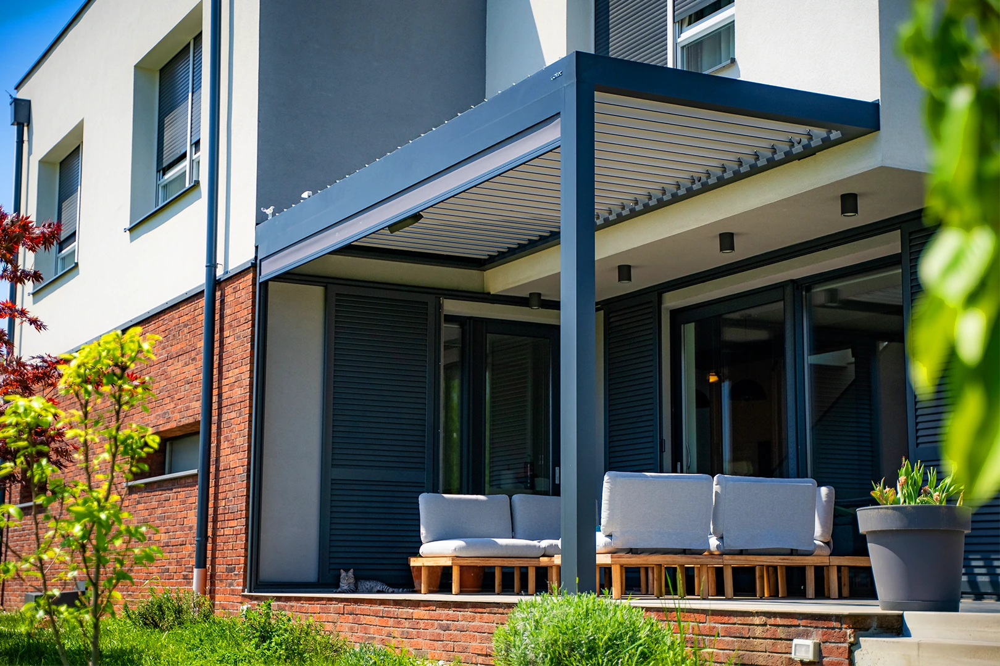
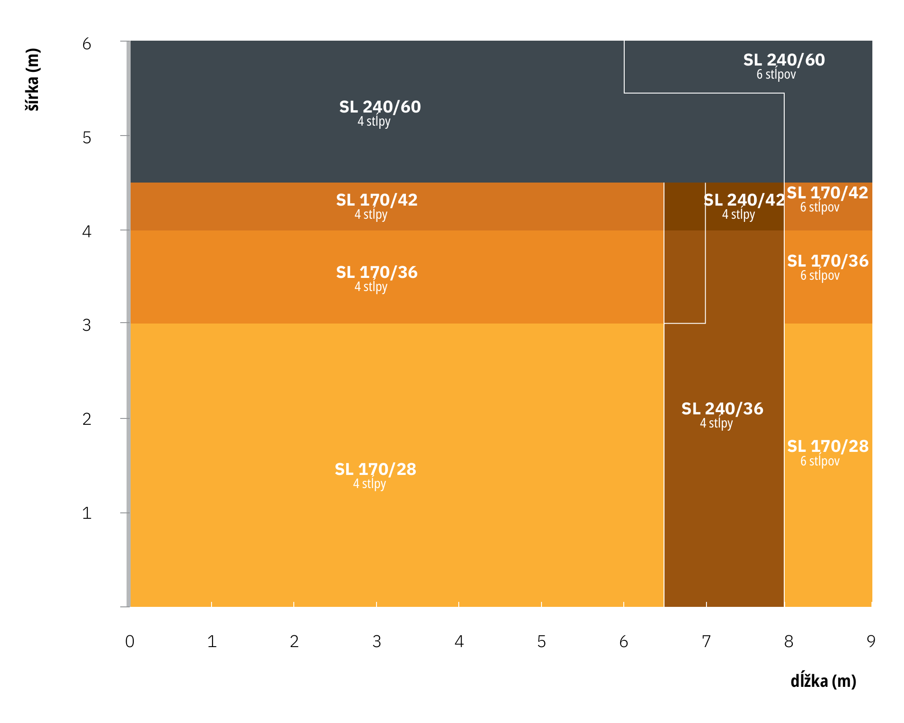
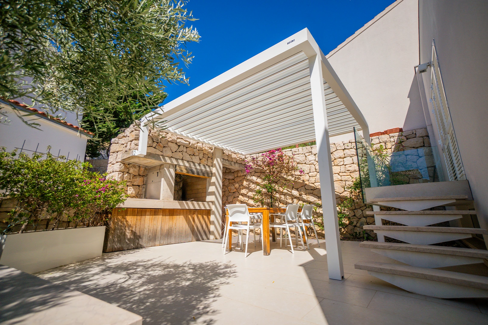
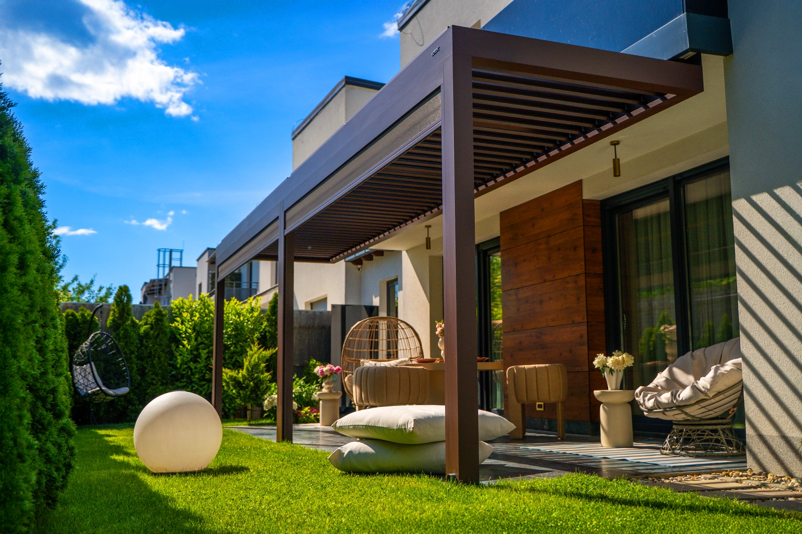
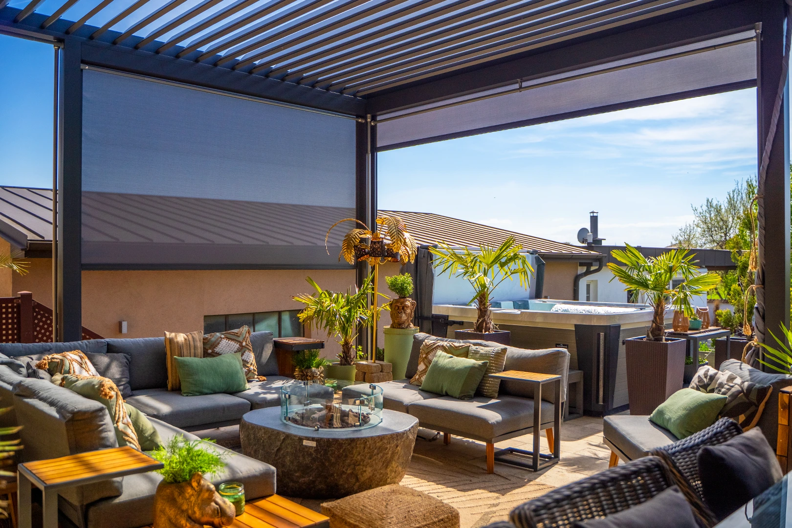
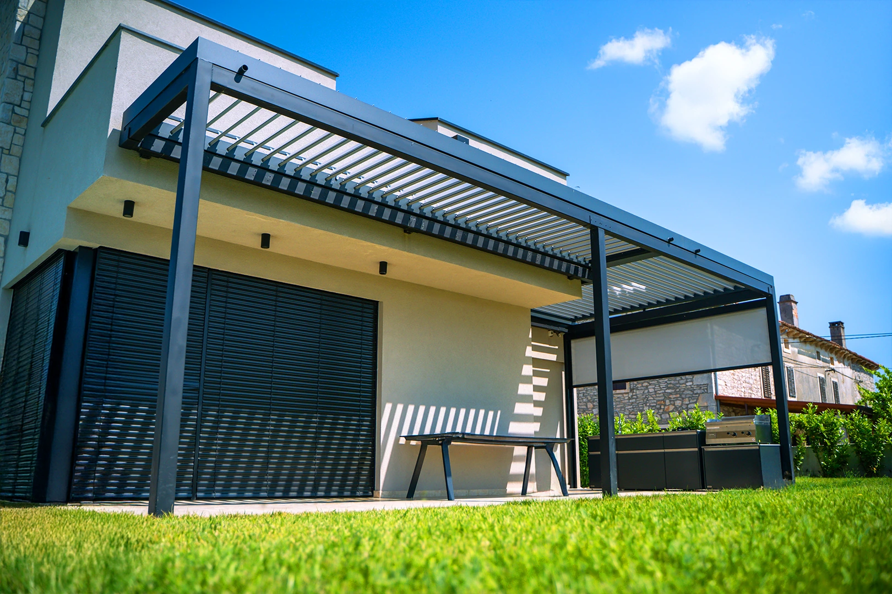
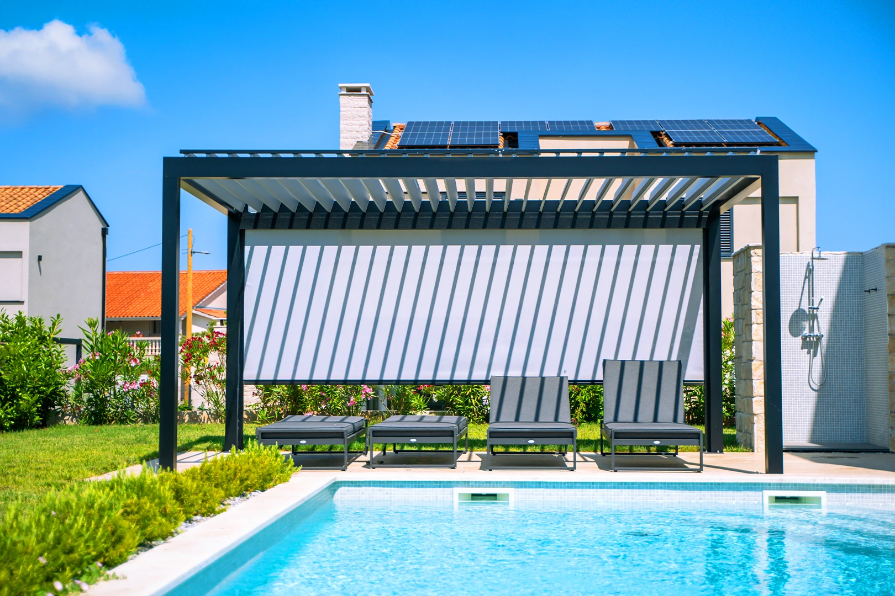
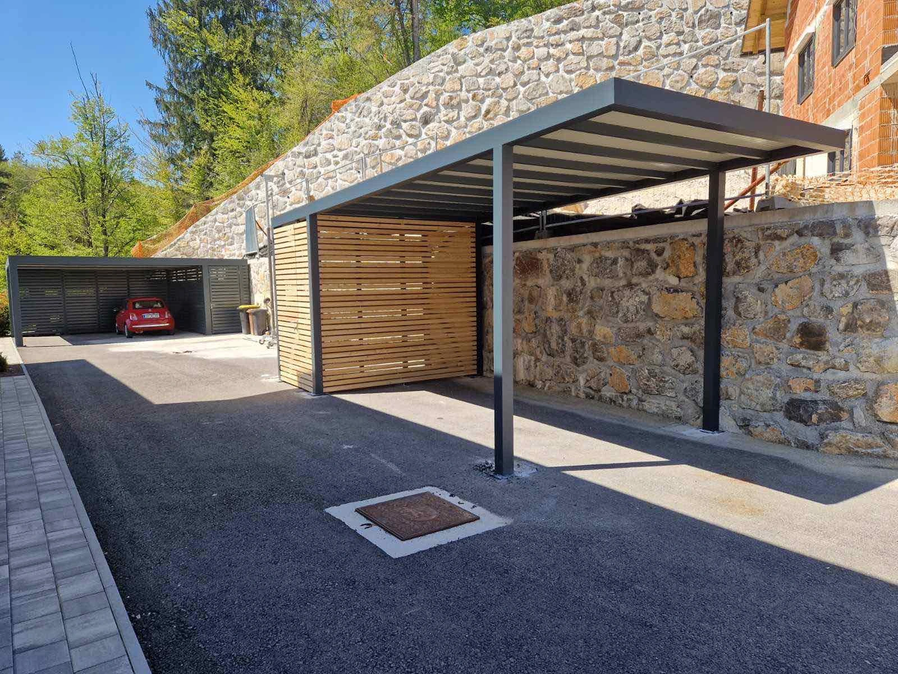
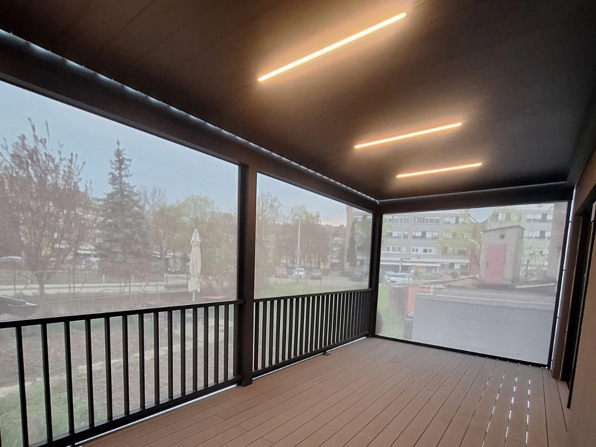
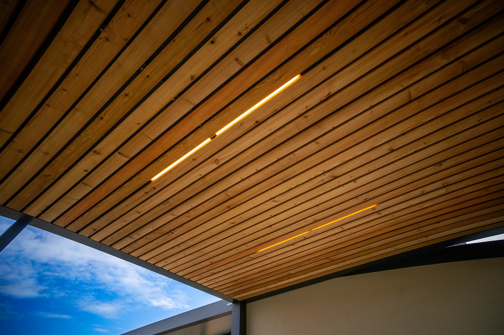

JarPrvé teplo, ešte studený vietor
Lamely privriete tak, aby pustili slnko a obmedzili prievan. Bočná ZIP roleta pomôže chrániť otvorenú stranu pred vetrom.
Hliníkové lamely sa natočia od úplného zatvorenia po otvorené nebo. V daždi sa zavrú a voda odtečie prievlakom, v horúčave nechajú prejsť vzduch.
Modely SL
Všetky pergoly Soltec stoja na rovnakom systéme. Líši sa nosný rám a výška lamely, a tie rozhodujú, aký veľký modul udržíte bez stĺpa navyše. Jeden modul pokryje až 40 m².
Vyskúšať v konfigurátoreNajväčší jeden modul podľa modelu. Šírku a dĺžku nemožno maximalizovať naraz.
| Model | Lamela | 4 stĺpy (šírka × dĺžka) | 6 stĺpov (šírka × dĺžka) |
|---|---|---|---|
| SL 170/28rám 170 | 200 × 28 mm | 3,5 × 6,5 m | 3,5 × 9,3 m |
| SL 170/36rám 170 | 200 × 36 mm | 4,3 × 6,5 m | 4,3 × 9,3 m |
| SL 170/42rám 170 | 200 × 42 mm | 4,8 × 6,5 m | 4,8 × 9,3 m |
| SL 240/36rám 240 | 200 × 36 mm | 4,3 × 8,0 m | 4,3 × 9,0 m |
| SL 240/42rám 240 | 200 × 42 mm | 4,8 × 8,0 m | 4,8 × 9,0 m |
| SL 240/60rám 240 | 270 × 60 mm | 6,0 × 6,0 m | 5,0 × 8,0 m |
Hranice jedného modulu podľa podkladov výrobcu. Väčšiu plochu poskladáme z viacerých. Konečný model potvrdíme podľa snehovej a veternej oblasti vášho miesta.

Tvar nie je daný katalógom. Pergola sa dá zalomiť okolo balkóna či rímsy a lamely osadiť kolmo aj rovnobežne so stenou, podľa toho, odkiaľ chcete svetlo.
Čo od vás potrebujeme na výber modeluŠírku a dĺžku terasy, jednu fotografiu miesta a obec montáže. Z toho povieme, ktorý model sadne a čo bude stáť.
Poslať rozmery a fotografiuPrečo bioklimatická
Pevná strecha zostáva v jednej polohe. Otočné lamely dávkujú tieň aj prúdenie vzduchu, pri zatvorení chránia pred dažďom a po otvorení nechajú terasu pod oblohou.
„Je to ako sedieť pod stromom.“ tak to opisujú zákazníci

JarLamely privriete tak, aby pustili slnko a obmedzili prievan. Bočná ZIP roleta pomôže chrániť otvorenú stranu pred vetrom.

LetoZatvorené lamely držia súvislý tieň. Teplý vzduch pod nimi neostáva stáť. Pootočením lamiel ho pustíte hore a von.

JeseňZatvorené lamely výrazne chránia pred dažďom. Voda stečie do integrovaného žľabu v ráme a ďalej cez stĺpy; dažďový snímač ich môže zavrieť automaticky.

ZimaSklenené alebo ZIP steny obmedzia studený vietor a infraohrievač predĺži čas na terase. Poloha lamiel pri snehu sa riadi vybraným modelom, rozponom a odporúčaním pre konkrétnu zostavu.
Štyri obrázky sú vizualizácie výrobcu, tá istá pergola v štyroch ročných obdobiach. Skutočné montáže sú nižšie v galérii.
Z čoho je to postavené
Otočná strecha je len jedna časť. To, či pod ňou v daždi nezmoknete a či sa zavrie sama, rozhoduje odvodnenie a elektronika.
Prejsť na nezáväznú ponukuLamely
Zatvorené lamely tvoria súvislú strechu, otvorené pustia dnu vzduch aj svetlo. Hliník s práškovým lakom.
Lamely
otočné hliníkové
Materiál
hliník, lak RAL

Odvodnenie
Voda ide zo strechy do prievlaku, prievlakom do stĺpa a do zeme. Na fasáde ani na konštrukcii nie sú žiadne vonkajšie zvody.
Zvody
žiadne vonkajšie
Cesta vody
strecha → stĺp → zem

Ovládanie
Lamely ovládate diaľkovo alebo vypínačom. Dažďový snímač ich zavrie, aby voda odtekala konštrukciou; veterný ich pri rizikových podmienkach otvorí, aby znížil zaťaženie.
Ovládanie
diaľkové aj vypínač
Automatika
dážď a vietor reagujú odlišne
Prečo Soltec
Z montáží Soltec
Toto sú miesta, kde sa pergola buď podarí, alebo začne prekážať. Všetky sa dajú vyriešiť ešte pred výrobou, potom už len ťažko.
01
Pergolu prispôsobujeme architektúre domu. Biely lak a útla konštrukcia urobia z terasy ľahký letný priestor namiesto ťažkej prístavby.
Konštrukcia
útly rám
Lak
RAL podľa fasády

02
Aj deväťmetrovú pergolu vieme postaviť bez vedľajších profilov, ktoré by pôsobili ťažko a zakrývali pohľad hore. Svetlé lamely priestoru pridajú vzdušnosť.
Rozpon
bez medziprofilov
Efekt
otvorený pohľad hore
03
Lamely uložené kolmo na dom pustia na terasu najviac denného svetla, takže veľké presklenie za nimi neprestane fungovať a izby ostanú svetlé po celý rok.
Uloženie
kolmo aj rovnobežne
Rozhoduje
orientácia terasy

04
Na strešnej terase alebo pod balkónom sa kotví špeciálnymi úchytmi. Hydroizolácia zostane celistvá a existujúce zábradlie sa nemusí prerábať.
Kotvenie
špeciálne úchyty
Zostáva
tesná izolácia

05
Zábradlie vieme integrovať vo farbe konštrukcie a ZIP roletu osadiť zvonku. Roleta potom dôjde až po podlahu a zábradlie jej nezavadzia.
Zábradlie
vo farbe rámu
ZIP roleta
až po podlahu

06
Balkón alebo rímsa robia zo steny nerovný povrch. Pergolu okolo tohto tvaru zalomíme, takže dosadne tesne na stenu a malá terasa sa využije celá.
Tvar
zalomený podľa steny
Zisk
využitá celá terasa
Čo je v cene
Zostavy a využitie
Jeden modul pokryje podľa modelu až 40 m². Väčšiu plochu poskladáme z viacerých modulov a pergolu vieme napojiť na prístrešok, vonkajšiu kuchyňu alebo tienenie. Všetko stojí na rovnakom systéme profilov, takže dom, terasa aj auto ostanú v jednom rukopise.
Poslať rozmer terasy
Voľne stojaca
Stojí sama na štyroch alebo šiestich stĺpoch: pri bazéne, uprostred záhrady alebo nad ohniskom. Stenu, o ktorú by sa oprela, nepotrebuje.
Stĺpy
4 alebo 6
Kotvenie
do pätiek alebo dlažby

Pri dome
Buď stojí na vlastných stĺpoch tesne pri fasáde, alebo sa k stene kotví. Rozhodne to, čo stena unesie. Lamely sa dajú otočiť tak, aby v zime slnko do izieb púšťali a v lete ho zadržali.
Osadenie
kolmo aj rovnobežne
Výška stĺpa
najviac 3 m
Uzavretá zo strán
ZIP rolety, sklo alebo posuvné panely uzavrú boky. S infraohrievačom sa terasa dá používať od marca do novembra.
Boky
ZIP, sklo, drevo
Boky
volíme pri návrhu
Pergola sa dá postaviť aj do nepravidelného tvaru a s ľubovoľným počtom stĺpov. Schémy usporiadaní má výrobca v katalógu a pri zameraní z nich vyberieme tú, ktorá sadne na váš pozemok.

Jedna stavba, v ktorej sa strieda niekoľko funkcií: posedenie, varenie, úložný box aj prechod.

Samostatné konštrukcie na rôznych miestach pozemku, navrhnuté v jednom štýle.
Výbava
Z pergoly sa dá urobiť kuchyňa na celý rok, večerný lounge, chladný kút pri bazéne alebo letné kino. Doplnky sa vešajú do drážok v ráme, takže ich pridáte aj o pár rokov. Povedzte nám dopredu, čo môže pribudnúť.
Tkanina zo sklolaminátu s PVC je vedená v bočnej lište so zipsom, takže ju vietor nevytiahne z vedenia. Vyberá sa otvorenosť 3 % pre viac súkromia alebo 6 % pre vzdušnejší výhľad; motor a diaľkové ovládanie sú súčasťou systému, veterný snímač je voliteľný.
Rozmer
do 2 800 × 6 500 mm
Otvorenosť
3 % alebo 6 %

Manuálne posuvný hliníkový rám s drevenou alebo hliníkovou výplňou sa pohybuje medzi hornou a spodnou koľajnicou. Jedna, dve alebo tri dráhy dovolia panely presunúť tam, kde práve treba súkromie alebo tieň; nejde o tesnú stenu proti dažďu.
Výška
do 3 000 mm
Vedenie
1, 2 alebo 3 dráhy

FW25 zo sibírskeho smrekovca, FI30 z ISO panela. Po celej strane alebo len po časti; nesú ich sekundárne stĺpy kotvené do zeme.
FW25 drevo
dĺžka do 4 m
FI30 panel
dĺžka do 6 m

G1 sa posúva do strany, G2 sa skladá na seba. Zastavia vietor a dážď, výhľad nechajú. Zámok ako doplnok.
Sklo
kalené 10 mm
Pohyb
posuvné aj skladacie

Lepené kalené sklo kombinovateľné s pergolou SL 170 aj SL 240. Púšťa svetlo do miestností za terasou.
Hrúbka
12 alebo 16 mm
Tabuľa
do 800 / 1 200 mm

LED priamo v lamelách alebo v ráme, infraohrievače na predĺženie sezóny. Zásuvka v stĺpe, ovládanie diaľkovým ovládačom alebo mobilom.
Svetlo
LED v lamelách
Teplo
infraohrievače
Normy a záruka
Bioklimatická pergola je pohyblivé tienenie. Bezpečná poloha lamiel pri snehu a vetre závisí od modelu, rozponu a miestnych podmienok; preto ju určí návrh konkrétnej zostavy. Dažďový snímač lamely zatvára, veterný ich pri riziku otvára.

Bioklimatické pergoly · Soltec
Otočné lamely s odvodom vody vedeným v konštrukcii. Väčšie plochy sa skladajú z viacerých modulov. ZIP rolety, sklenené panely, LED a ďalšie doplnky sa vyberajú podľa konkrétneho profilu a rozmeru. Pri návrhu preto overíme kompatibilitu doplnkov ešte pred objednávkou.
6
modelov SL podľa rozponu
do 40 m²
vybrané konfigurácie jedného modulu
Na stiahnutie
Katalóg je od výrobcu Soltec, v pôvodnom jazyku. Čokoľvek z neho radi vysvetlíme po slovensky.
Z našich montáží
Tá istá strecha ráno, na obed aj večer.

Pergola s pootvorenými lamelami

Detail lamiel v otvorenej polohe

Realizácia bioklimatickej pergoly v Žilinskej Lehote

Pergola so zatiahnutými ZIP roletami

Realizácia bioklimatickej pergoly v Hliníku nad Hronom
Časté otázky
Nenašli ste odpoveď? Zavolajte nám, poradíme aj bez záväzku.
+421 948 482 266Cenu určuje rozmer, typorad, počet stĺpov, odtieň a doplnky. ZIP rolety, sklo, osvetlenie či ohrievače tvoria často podstatnú časť sumy, preto sa pergola nepredáva ako hotový balík. Napíšte nám rozmer terasy a miesto realizácie, cenu na konkrétnu zostavu pošleme do jedného pracovného dňa. Zameranie je zadarmo, doprava aj montáž sú v cene.
Áno. Otočné lamely majú patentovaný tvar s tesnením, takže pri zatvorení voda stečie do žľabu integrovaného v ráme a odíde cez stĺpy. Nie je to utesnená zimná záhrada, pri silnom bočnom vetre sa niečo dostane dnu, ale pod pergolou sa v daždi normálne sedí.
Dažďový snímač lamely zavrie sám. Veterný snímač ich naopak otvorí, aby konštrukcia nebola zbytočne zaťažená. To isté platí pri veľkom snehu: otvorené lamely sú bezpečná poloha a snímač sa o to postará za vás.
Jedna zostava pokryje až 40 m² zastrešenej plochy. Nad tým sa skladajú viaceré polia alebo moduly vedľa seba. Konkrétny typorad určí statický návrh podľa rozmeru, vetra a snehu vo vašej lokalite, nie číslo z katalógu.
Áno. Kotví sa k stene domu alebo stojí samostatne na štyroch či šiestich stĺpoch. Lamely vieme osadiť kolmo aj rovnobežne so stenou, podľa toho, odkiaľ chodí slnko. Obe riešenia sú v konfigurátore.
Bočné ZIP rolety, posuvné drevené alebo hliníkové panely, sklenené steny, integrované osvetlenie, ohrievače, reproduktory a diaľkové ovládanie. Doplniť sa dá aj presklený strop Glassport, ktorý pustí do domu viac denného svetla.
Hneď pri návrhu. Rolety, panely, osvetlenie aj snímače sa osádzajú do drážok v nosnom ráme, takže s nimi treba počítať v ráme, vo vedení aj v prípojkách. Diely chodia zo Slovinska, preto dodatočná prestavba stojí podstatne viac než jedna montáž.
Závisí od rozmeru, umiestnenia a konkrétneho pozemku, preto si to overte na príslušnom stavebnom úrade. K ponuke dostávate rozmery aj osadenie konštrukcie, teda podklady, ktoré úrad zvyčajne žiada.
Prakticky nijako. Práškový lak sa neošetruje, stačí ho raz za čas opláchnuť vodou. Raz ročne odporúčame prejsť odtok, vybrať lístie a skontrolovať, či sa lamely voľne otáčajú. Nič sa nemaže ani nenatiera.
Vyrába ju Soltec v Slovinsku, kde má aj vlastný vývoj; tieneniu sa venuje od roku 1998 a má za sebou vyše 7 000 realizácií. Systém je vyrobený podľa normy EN 13561 s označením CE a odolnosťou proti vetru triedy 3. Na Slovensku robíme kompletný servis my: zameranie, návrh, pätky, dopravu, montáž aj odovzdanie.
Cenová ponuka zadarmo
Natočenie lamiel, boky aj osvetlenie si viete vyskúšať v 3D. Zostavu nám pošlite a doladíme ju pri zameraní.
Ozveme sa vám do jedného pracovného dňa. Ak sa dovtedy nikto neozve, radšej zavolajte. Mohlo sa stať, že dopyt k nám nedošiel. Takto to bude pokračovať:
Fotky, ktoré ste vybrali, pošlite prosím e-mailom. Formulár ich k nám neprenesie. Poslať fotky na obchod@koverta.sk
Súri to? +421 948 482 266 · obchod@koverta.sk
Poslať ten istý dopyt aj e-mailom Ak by k nám formulár nedoručil, e-mail dôjde vždy.
Server nám nevrátil odpoveď, takže nevieme povedať, či dopyt prešiel. Nečakajte na nás, ozvite sa priamo a vybavíme to hneď: